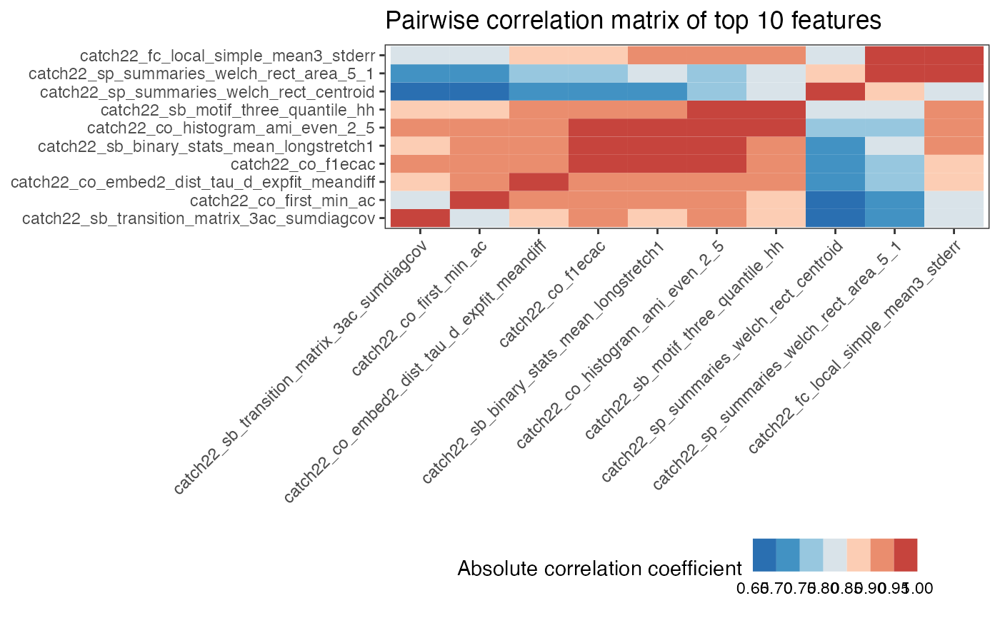
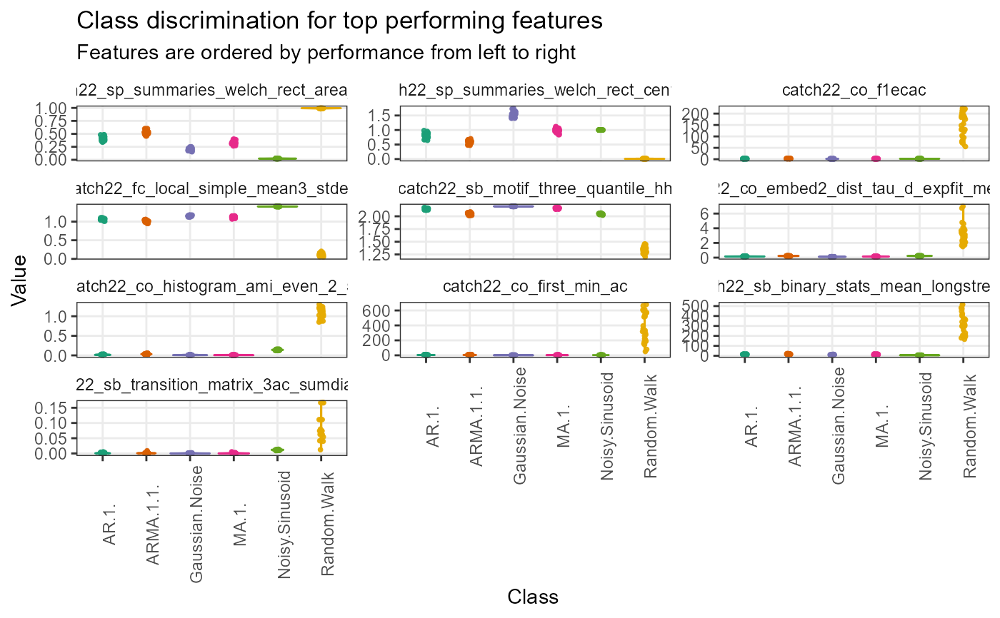

Return an object containing results from top-performing features on a classification task
Source:R/compute_top_features.R
compute_top_features.RdReturn an object containing results from top-performing features on a classification task
Usage
compute_top_features(
data,
num_features = 40,
normalise_violin_plots = FALSE,
method = c("z-score", "Sigmoid", "RobustSigmoid", "MinMax"),
cor_method = c("pearson", "spearman"),
test_method = "gaussprRadial",
clust_method = c("average", "ward.D", "ward.D2", "single", "complete", "mcquitty",
"median", "centroid"),
use_balanced_accuracy = FALSE,
use_k_fold = FALSE,
num_folds = 10,
use_empirical_null = FALSE,
null_testing_method = c("ModelFreeShuffles", "NullModelFits"),
p_value_method = c("empirical", "gaussian"),
num_permutations = 50,
pool_empirical_null = FALSE,
seed = 123
)Arguments
- data
the
feature_calculationsobject containing the raw feature matrix produced bycalculate_features- num_features
the number of top features to retain and explore. Defaults to
40- normalise_violin_plots
a Boolean of whether to normalise features before plotting. Defaults to
FALSE- method
a rescaling/normalising method to apply to violin plots. Defaults to
"z-score"- cor_method
the correlation method to use. Defaults to
"pearson"- test_method
the algorithm to use for quantifying class separation. Defaults to
"gaussprRadial"- clust_method
the hierarchical clustering method to use for the pairwise correlation plot. Defaults to
"average"- use_balanced_accuracy
a Boolean specifying whether to use balanced accuracy as the summary metric for caret model training. Defaults to
FALSE- use_k_fold
a Boolean specifying whether to use k-fold procedures for generating a distribution of classification accuracy estimates if a
caretmodel is specified fortest_method. Defaults toFALSE- num_folds
an integer specifying the number of k-folds to perform if
use_k_foldis set toTRUE. Defaults to10- use_empirical_null
a Boolean specifying whether to use empirical null procedures to compute p-values if a
caretmodel is specified fortest_method. Defaults toFALSE- null_testing_method
a string specifying the type of statistical method to use to calculate p-values. Defaults to
model free shuffles- p_value_method
a string specifying the method of calculating p-values. Defaults to
"empirical"- num_permutations
an integer specifying the number of class label shuffles to perform if
use_empirical_nullisTRUE. Defaults to50- pool_empirical_null
a Boolean specifying whether to use the pooled empirical null distribution of all features or each features' individual empirical null distribution if a
caretmodel is specified fortest_methoduse_empirical_null isTRUE. Defaults toFALSE- seed
fixed number for R's random number generator to ensure reproducibility
Value
an object of class list containing a dataframe of results, a feature x feature matrix plot, and a violin plot
Examples
# \donttest{
featMat <- calculate_features(data = simData,
id_var = "id",
time_var = "timepoint",
values_var = "values",
group_var = "process",
feature_set = "catch22",
seed = 123)
#> No IDs removed. All value vectors good for feature extraction.
#> Running computations for catch22...
#>
#> Calculations completed for catch22.
compute_top_features(featMat,
num_features = 10,
normalise_violin_plots = FALSE,
method = "RobustSigmoid",
cor_method = "pearson",
test_method = "gaussprRadial",
clust_method = "average",
use_balanced_accuracy = FALSE,
use_k_fold = FALSE,
num_folds = 10,
use_empirical_null = TRUE,
null_testing_method = "ModelFreeShuffles",
p_value_method = "gaussian",
num_permutations = 100,
pool_empirical_null = FALSE,
seed = 123)
#> This will take a while. Great reason to go grab a coffee and relax ^_^
#>
#> Selecting top features using p-value.
#> $ResultsTable
#> feature accuracy p_value_accuracy
#> 1 catch22_sp_summaries_welch_rect_area_5_1 0.9666667 2.837940e-170
#> 2 catch22_sp_summaries_welch_rect_centroid 0.8888889 3.530057e-139
#> 3 catch22_co_f1ecac 0.8777778 5.382803e-135
#> 4 catch22_fc_local_simple_mean3_stderr 0.8277778 5.685461e-117
#> 5 catch22_sb_motif_three_quantile_hh 0.8000000 1.591674e-107
#> 6 catch22_co_embed2_dist_tau_d_expfit_meandiff 0.7444444 7.643036e-90
#> 7 catch22_co_histogram_ami_even_2_5 0.7055556 1.988011e-78
#> 8 catch22_co_first_min_ac 0.7000000 7.320026e-77
#> 9 catch22_sb_binary_stats_mean_longstretch1 0.6555556 6.481323e-65
#> 10 catch22_sb_transition_matrix_3ac_sumdiagcov 0.6333333 2.498169e-59
#> classifier_name statistic_name
#> 1 gaussprRadial Mean classification accuracy
#> 2 gaussprRadial Mean classification accuracy
#> 3 gaussprRadial Mean classification accuracy
#> 4 gaussprRadial Mean classification accuracy
#> 5 gaussprRadial Mean classification accuracy
#> 6 gaussprRadial Mean classification accuracy
#> 7 gaussprRadial Mean classification accuracy
#> 8 gaussprRadial Mean classification accuracy
#> 9 gaussprRadial Mean classification accuracy
#> 10 gaussprRadial Mean classification accuracy
#>
#> $FeatureFeatureCorrelationPlot

#>
#> $ViolinPlots

#>
# }